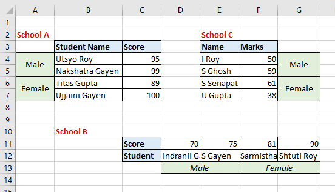
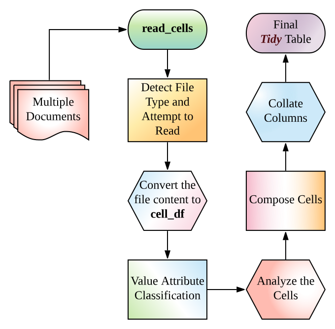
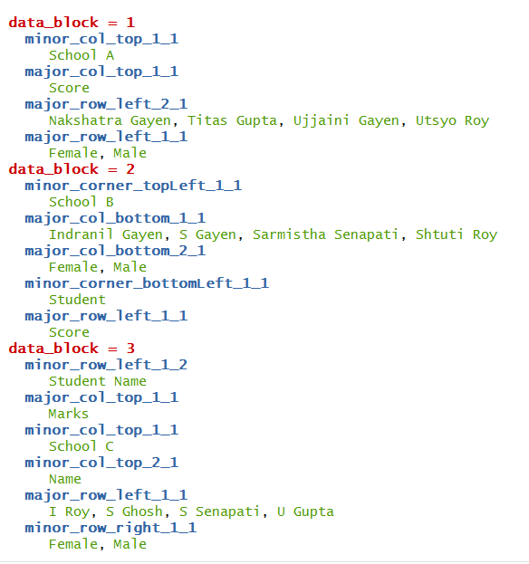
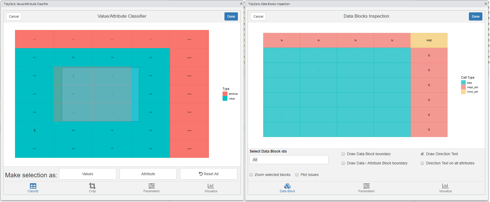

TL;DR
Given a file_name which is a path of a file that contains table(s). Run this read_cells() in the R-console to see whether support is present for the file type. If support is present, just run
Note
- Just start with a small file, as heuristic-algorithm are not well-optimized (yet).
- If the target table has numerical values as data and text as their attribute (identifier of the data elements), straight forward method is sufficient in the majority of situations. Otherwise, you may need to utilize other functions.
A Word of Warning :
Many functions in this package are heuristic-algorithm based. Thus, outcomes may be unexpected. I recommend you to try read_cells on the target file. If the outcome is what you are expecting, it is fine. If not try again with read_cells(file_name, at_level = "compose"). If after that also the output is not as expected then other functions are required to be used. At that time start again with read_cells(file_name, at_level = "make_cells") and proceed to further functions.
Introduction
The package provides utilities to read, cells from complex tabular data and heuristic detection based ‘structural assignment’ of those cells to a columnar or tidy format.
Read functionality has the ability to read (in a unified manner) structured, partially structured or unstructured tabular data (usually spreadsheets for public data dissemination and aimed for common human understanding) from various types of documents. The tabular information is read as cells. The ‘structure assignment’ functionality has both supervised and unsupervised way of assigning cells data to columnar/tidy format. Multiple disconnected blocks of tables in a single sheet are also handled appropriately.
These tools are suitable for unattended conversation of (maybe a pile of) messy tables (like government data) into a consumable format(usable for further analysis and data wrangling).
Installation
Install the CRAN version:
To install the development version from GitHub you’ll need remotes package in R (comes with devtools). Assuming you have remotes you can install this package in R with the following command:
# devtools::install_github is actually remotes::install_github
remotes::install_github("r-rudra/tidycells")To start with tidycells, I invite you to see vignette("tidycells-intro") or check out tidycells-website (to see vignette you need to install the package with vignette. That can be done in above command (remotes::install_github) by specifying build_vignettes = TRUE. Note that, it might be time consuming. CRAN version comes with prebuilt-vignette).
Quick Overview
Let’s take a quick look at an example data as given in
The data looks like (in excel)

Let’s try tidycells functions in this data
Read at once
# you should have tidyxl installed
system.file("extdata", "marks.xlsx", package = "tidycells", mustWork = TRUE) %>%
read_cells()| collated_1 | collated_2 | collated_3 | collated_4 | collated_5 | table_tag | value |
|---|---|---|---|---|---|---|
| Score | Male | School A | Student Name | Utsyo Roy | Sheet1 | 95 |
| Score | Male | School A | Student Name | Nakshatra Gayen | Sheet1 | 99 |
| Score | Female | School A | Student Name | Titas Gupta | Sheet1 | 89 |
| Score | Female | School A | Student Name | Ujjaini Gayen | Sheet1 | 100 |
| Score | Male | School B | Student | Indranil Gayen | Sheet1 | 70 |
| Score | Male | School B | Student | S Gayen | Sheet1 | 75 |
| Score | Female | School B | Student | Sarmistha Senapati | Sheet1 | 81 |
| Score | Female | School B | Student | Shtuti Roy | Sheet1 | 90 |
| Score | Male | School C | Name | I Roy | Sheet1 | 50 |
| Score | Male | School C | Name | S Ghosh | Sheet1 | 59 |
| Score | Female | School C | Name | S Senapati | Sheet1 | 61 |
| Score | Female | School C | Name | U Gupta | Sheet1 | 38 |
The function read_cells is a set of ordered operations connected together. The flowchart of read_cells:

Let’s understand step by step procedures followed by read_cells.
# if you have tidyxl installed
d <- system.file("extdata", "marks.xlsx", package = "tidycells", mustWork = TRUE) %>%
read_cells(at_level = "make_cells") %>%
.[[1]]Or
# or you may do
d <- system.file("extdata", "marks_cells.rds", package = "tidycells", mustWork = TRUE) %>%
readRDS()Then
After this you need to run compose_cells (with argument print_attribute_overview = TRUE)

If you want a well-aligned columns then you may like to do
# bit tricky and tedious unless you do print_attribute_overview = TRUE in above line
dcfine <- dc %>%
dplyr::mutate(name = dplyr::case_when(
data_block == 1 ~ major_row_left_2_1,
data_block == 2 ~ major_col_bottom_1_1,
data_block == 3 ~ major_row_left_1_1
),
sex = dplyr::case_when(
data_block == 1 ~ major_row_left_1_1,
data_block == 2 ~ major_col_bottom_2_1,
data_block == 3 ~ minor_row_right_1_1
),
school = dplyr::case_when(
data_block == 1 ~ minor_col_top_1_1,
data_block == 2 ~ minor_corner_topLeft_1_1,
data_block == 3 ~ minor_col_top_1_1
)) %>%
dplyr::select(school,sex, name, value)head(dcfine) looks like
| school | sex | name | value |
|---|---|---|---|
| School A | Male | Utsyo Roy | 95 |
| School A | Male | Nakshatra Gayen | 99 |
| School A | Female | Titas Gupta | 89 |
| School A | Female | Ujjaini Gayen | 100 |
| School B | Male | Indranil Gayen | 70 |
| School B | Male | S Gayen | 75 |
This is still not good right! You had to manually pick some weird column-names and spent some time and energy (when it was evident from data which columns should be aligned with whom).
The collate_columns functions does exactly this for you. So instead of manually picking column-names after compose cells you can simply run
# collate_columns(dc) should be same with
# direct read_cells() result except table_tag column
collate_columns(dc) %>%
head()| collated_1 | collated_2 | collated_3 | collated_4 | collated_5 | value |
|---|---|---|---|---|---|
| Score | Male | School A | Student Name | Utsyo Roy | 95 |
| Score | Male | School A | Student Name | Nakshatra Gayen | 99 |
| Score | Female | School A | Student Name | Titas Gupta | 89 |
| Score | Female | School A | Student Name | Ujjaini Gayen | 100 |
| Score | Male | School B | Student | Indranil Gayen | 70 |
| Score | Male | School B | Student | S Gayen | 75 |
Looks like staged example! Yes, you are right this is not always perfect (same is true for analyze_cells also). However, if the data is somehow helpful in demystifying underlying columns structure (like this one), then this will be useful.
These functions read_cells (all functionalities combined), analyze_cells, collate_columns are here to ease your pain in data wrangling and reading from various sources. It may not be full-proof solution to all types of tabular data. It is always recommended to perform these tasks manually whenever expected results are not coming.
Plots and Interactive Modules
The package provides ggplot based plots and shiny based interactive visualisations for understanding how the heuristic is functioning and also provides object (like cell-df or cell-analysis) editing capabilities.
The shiny package is required for interactive modules. Most of the features are self-explanatory and guided.
Check out interactive documentation of any of these functions listed below. All of these functions are available as RStudio Addins.
Here are screenshots of each interactive widgets.
- Plot tune (part of all modules)
-
visual_crop()for data crop and deletion of sections

-
visual_va_classify()for interactive VA classification -
visual_data_block_inspection()this shows how the heuristic has performed the analysis afteranalyze_cells

-
visual_orientation_modification()for modification to heuristic based results -
visual_traceback()this is for observing how the original data is composed to form the final output. (compose_cellsis called internally)

For each of these modules, there is a dynamic plot option available from plotly. If you have that package, the corresponding tab will be activated. Since all of these modules are entirely optional the dependency is kept at tidycells ‘suggests’ level only.
Acknowledgement
This package incomplete without following packages (apart from the unpivotr which is the core package on which tidycells depends largely, as mentioned above). Each of these packages are in suggests fields of tidycells. (The read_cells basically, performs unification on several functions from various packages to give you support for different file types. These are listed below.)
- readr: for csv (in melted format)
- readxl: for reading xls (if xlsx is present by default xlsx will be used for xls)
- xlsx: for reading xls (also it has capabilities to read xlsx)
- tidyxl: really fast library for reading xlsx
- docxtractr : for docx and doc (it has a system level dependency now)
- tabulizer : for pdf
- XML : for html/xml type files
-
stringdist : for enhanced string matching in
tidycells::collate_columns